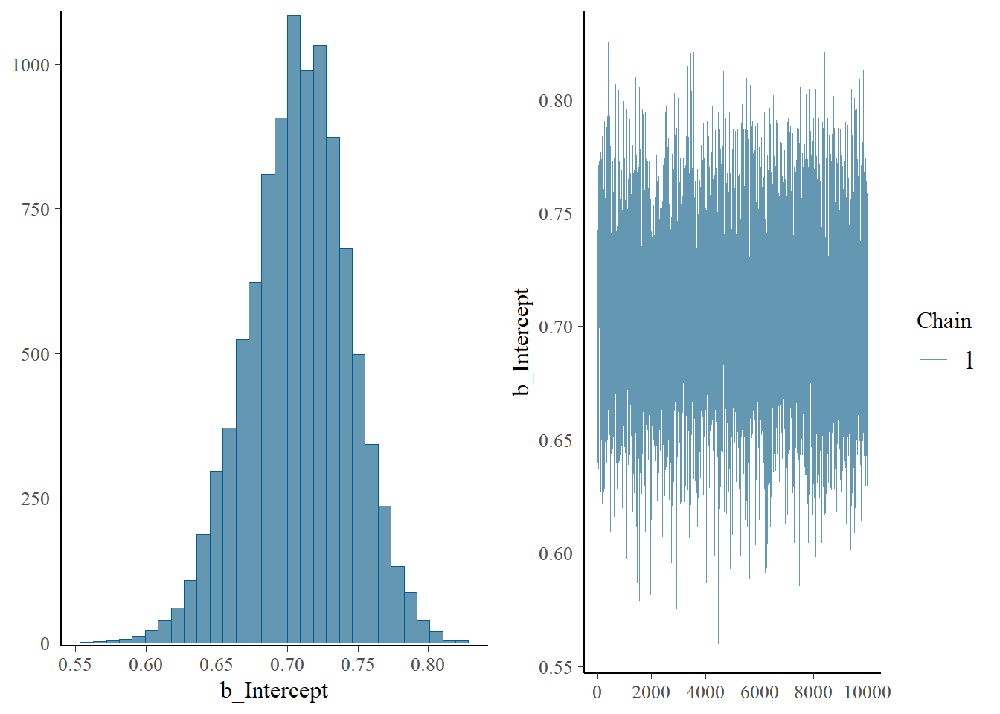
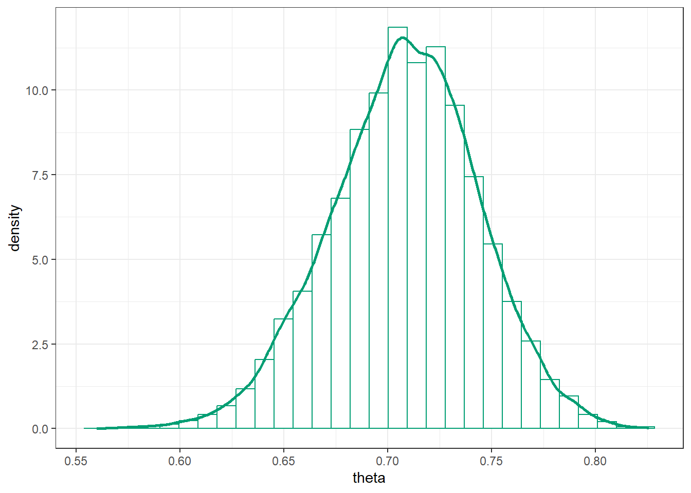
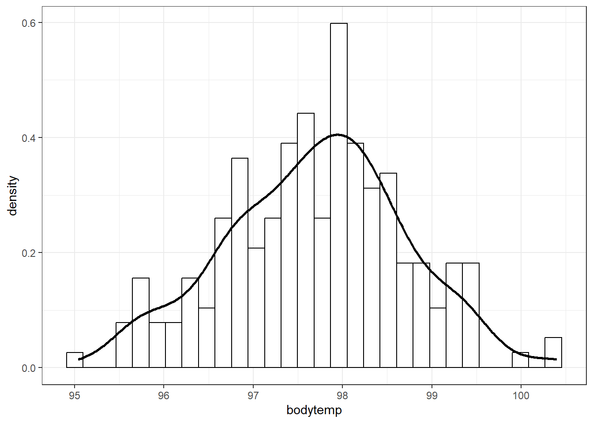
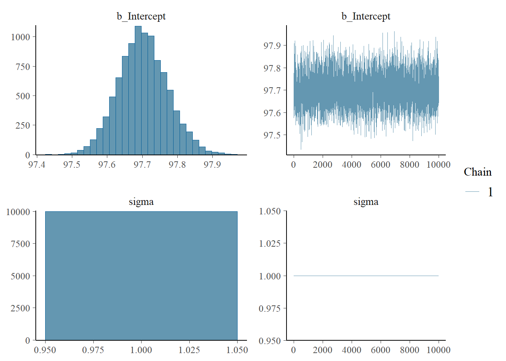
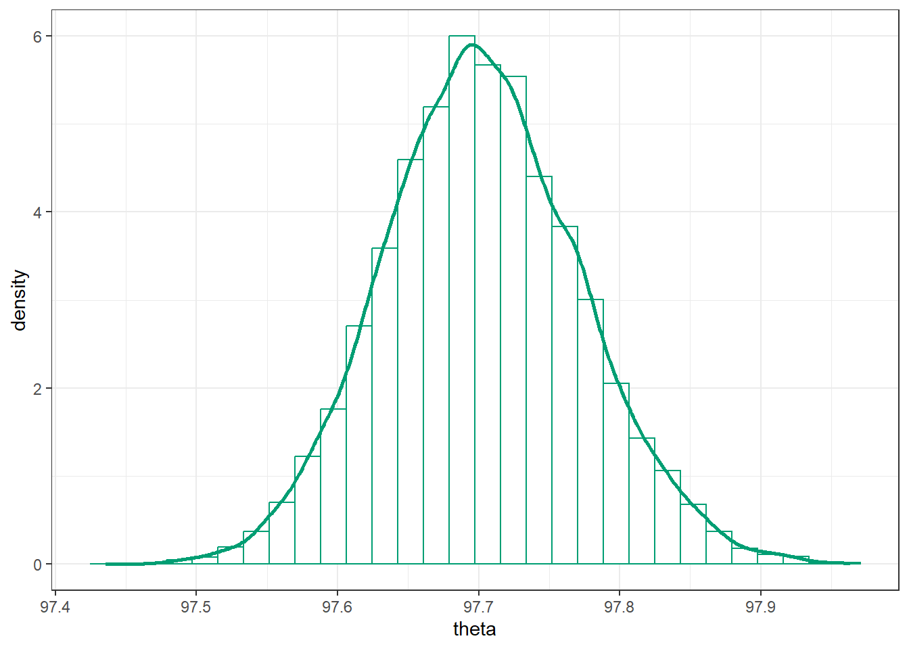
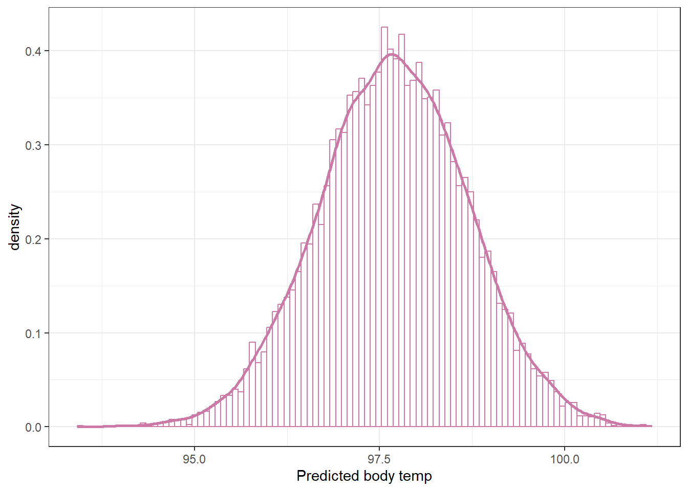
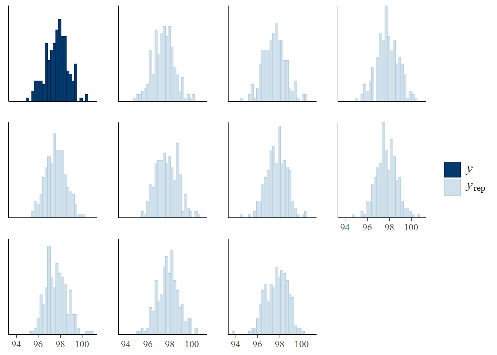

All of Bayesian inference is based on the posterior distribution of parameters given sample data.
Therefore, the main computational task in a Bayesian analysis is computing, or approximating, the posterior distribution.
Example 14.1 Suppose we wish to estimate the proportion of Cal Poly students that are left-handed. Suppose we want to assume a Normal distribution prior for \(\theta\) with mean 0.15 and SD 0.08. Also suppose that in a sample of 25 Cal Poly students 5 are left-handed. We want to find the posterior distribution.
Note: the Normal distribution prior assigns positive (but small) density outside of (0, 1). So we can either truncate the prior to 0 outside of (0, 1) or just rely on the fact that the likelihood will be 0 for \(\theta\) outside of (0, 1) to assign 0 posterior density outside (0, 1).
Write an expression for the shape of the posterior density. Is this a recognizable probability distribution?
Describe in full detail two methods for approximating the posterior distribution in this situation.
In most problems it is not possible to find the posterior distribution analytically, and therefore we must approximate it.
We have seen two approximation methods: grid approximation and simulation.
Example 14.2 Suppose you’re interested in studying sleep hours of Cal Poly undergraduates. You assume that within each of the six colleges sleep hours follow a Normal distribution with a mean and SD for the college. You’ll collect data on a random sample of students, record their college and sleep hours, and use it to perform a Bayesian analysis.
How many parameters are there in this situation?
Suppose you try a grid approximation. You create a grid of 100 values over the possible range of values of each parameter (say [3, 13]). How many rows would there be in the Bayes table?
Grid approximation suffers from the “curse of dimensionality” and is not computationally feasible in multi-parameter problems (and most interesting problems are multi-parameter).
Example 14.3 Recall that we have used simulation to approximate posterior distributions in a few situations: Example 2.3, Example 10.2, Example 10.7.
Explain the general method for using simulation to approximate a posterior distribution given sample data. Careful: don’t confuse posterior distributions with posterior predictive distributions.
Explain why this method is typically not feasible in practice. (It might help to look at the simulation results from the examples referenced above.)
We have seen three ways to compute/approximate the posterior distribution
Math. Only works in a few special cases (e.g., Beta-Binomial, Normal-Normal, conjugate prior situations).
Grid approximation. Not feasible when there are more than just a few parameters.
Simulation. By far the most common method, though we have only seen a very naive approach so far.
In principle, the posterior distribution \(\pi(\theta|y)\) of parameters \(\theta\) given observed data \(y\) can be approximated via simulation in the following way.
Simulate a \(\theta\) value from the prior distribution (\(\theta\) could be a vector of parameters, e.g., \(\theta = (\mu, \sigma)\)).
Given the simulated \(\theta\), simulate hypothetical data \(y\) from the corresponding conditional distribution of \(y\) given \(\theta\) (\(y\) could be a full sample, or the value of a sample statistic).
Repeat many times and discard \((\theta, y)\) pairs for which the simulated data \(y\) is not equal to the observed data \(y\)
Summarize the simulated \(\theta\) values for the remaining pairs (with \(y\) equal to the observed data).
While this method works in principle, it is a very computationally inefficient way of approximating the posterior distribution, since in most cases (e.g., not-small sample, continuous variables) the probability of replicating the observed data \(y\) is essentially 0.
Therefore, we need more efficient simulation algorithms for approximating posterior distributions. Markov chain Monte Carlo (MCMC) methods provide powerful and widely applicable algorithms for simulating from probability distributions, including complex and high-dimensional distributions. These algorithms include Metropolis-Hastings, Gibbs sampling, Hamiltonian Monte Carlo (HMC), and No U-Turn sampling (NUTS), among others. We will see later some of the ideas behind MCMC algorithms.
Regardless of which simulation algorithm we use to approximate the posterior distribution, there are 3 main inputs:
Observed data \(y\)
Model for the data, \(f(y|\theta)\) which depends on parameters \(\theta\). (This model determines the likelihood function.)
Prior distribution for parameters \(\pi(\theta)\)
We then employ some simulation algorithm to approximate the posterior distribution of \(\theta\) given the observed data \(y\), \(\pi(\theta|y)\), without computing the posterior distribution.
14.1 Introduction to brms
We will rely on the software package brms (“Bayesian Regression Models using Stan”) to carry out MCMC simulations.
Warning: package 'brms' was built under R version 4.3.3
Loading required package: Rcpp
Warning: package 'Rcpp' was built under R version 4.3.3
Loading 'brms' package (version 2.22.0). Useful instructions
can be found by typing help('brms'). A more detailed introduction
to the package is available through vignette('brms_overview').
Attaching package: 'brms'
The following object is masked from 'package:stats':
ar
we will introduce some basic functionality of brms in a few examples we have encountered previously.
Recall Example 7.3 where we were interested in \(\theta\), the population proportion of American adults who have read a book in the last year. We assumed a Normal prior distribution for \(\theta\) with prior mean 0.4 and prior standard deviation 0.1. In a sample of 150 American adults, 113 have read a book in the past year. (The real sample was size 1502, but we looked at the smaller sample size first.)
First we define the data. We could just define the total number of successes and the sample size. However, data is most often input as individual values in un-summarized form (e.g., a csv file with one row for each observational unit), so this is what we’ll do. We’ll create a vector with 113 1s (“successes”) and 37 0s (“failures”).
Note that since the data contains individual 1/0 values, the likelihood is determined by the Bernoulli distribution, a special case of Binomial with \(n=1\). That is, if \(y_i\) denotes an individual value, then \(y_i\sim\) Bernoulli(\(\theta\)) = Binomial(1, \(\theta\)).
Next we fit the model to the data using the function brm. The three inputs are:
Input 1: the data data = data
Input 2: model for the data (likelihood) family = bernoulli(link = identity) y ~ 1 # linear model with intercept only
Input 3: prior distribution for parameters prior = prior(normal(0.4, 0.1), class = Intercept)
Other arguments specify the details of the numerical algorithm; our specifications below will result in 10000 \(\theta\) values simulated from the posterior distribution.
fit <-brm(data = data, family =bernoulli(link = identity),formula = y ~1,prior(normal(0.4, 0.1), class = Intercept),iter =11000,warmup =1000,chains =1,refresh =0)
Compiling Stan program...
Start sampling
Here is a brief summary of results. Notice that “Estimate” is the posterior mean, ““Est.Error” is the posterior standard deviation, and “l-95% CI, u-95% CI” are the endpoints of a posterior 95% credible interval.
summary(fit)
Family: bernoulli
Links: mu = identity
Formula: y ~ 1
Data: data (Number of observations: 150)
Draws: 1 chains, each with iter = 11000; warmup = 1000; thin = 1;
total post-warmup draws = 10000
Regression Coefficients:
Estimate Est.Error l-95% CI u-95% CI Rhat Bulk_ESS Tail_ESS
Intercept 0.71 0.04 0.64 0.77 1.00 4009 5442
Draws were sampled using sampling(NUTS). For each parameter, Bulk_ESS
and Tail_ESS are effective sample size measures, and Rhat is the potential
scale reduction factor on split chains (at convergence, Rhat = 1).
Here are some plots. The plot on the left represents the posterior distribution of \(\theta\).
plot(fit)

The b_Intercept row in the posterior_summary below contains the posterior mean (“Estimate”), SD (“Est.Error”), median (“Q50”), and endpoints of central 50%, 80%, and 98% credible intervals. Compare to the grid approximation in Example 7.3; the results are very similar.
There are commands within brms for working with simulation output. But using spread_draws from the tidybayes package, we can put the 10000 simulated values into a data frame. Then we can summarize the posterior distribution just like we summarize any data set.
Below we save simulated values of theta in the posterior data frame.
library(tidybayes)
Warning: package 'tidybayes' was built under R version 4.3.3
Attaching package: 'tidybayes'
The following objects are masked from 'package:brms':
dstudent_t, pstudent_t, qstudent_t, rstudent_t
posterior = fit |>spread_draws(b_Intercept) |>rename(theta = b_Intercept)posterior |>head(10) |>kbl() |>kable_styling()
.chain
.iteration
.draw
theta
1
1
1
0.7166199
1
2
2
0.7324163
1
3
3
0.6957477
1
4
4
0.7426208
1
5
5
0.7083129
1
6
6
0.6874246
1
7
7
0.6792586
1
8
8
0.6398941
1
9
9
0.6795586
1
10
10
0.6714900
Now we can plot values of theta as usual, e.g., using ggplot2.
Here is a histogram of the simulated \(\theta\) values, with the approximate posterior density overlaid.
posterior |>ggplot(aes(x = theta)) +geom_histogram(aes(y =after_stat(density)),col = bayes_col["posterior"], fill ="white") +geom_density(linewidth =1, col = bayes_col["posterior"]) +theme_bw()

Here is a plot of the approximate posterior cumulative distribution function.
Now we’ll look at an example with continuous data. Recall Example 8.4. Assume body temperatures (degrees Fahrenheit) of healthy adults follow a Normal distribution with unknown mean \(\theta\) and known standard deviation \(\sigma=1\). (It’s unrealistic to assume the population standard deviation is known. We’ll consider the case of unknown standard deviation later.) Suppose we wish to estimate \(\theta\), the population mean healthy human body temperature. We considered a few priors in Example 8.4; here we’ll use a Uniform prior on [96.0, 100.0]. In a recent study, the sample mean body temperature in a sample of 208 healthy adults was 97.7 degrees F.
First we load the data from the file bodytemps.csv; the temperature variable is bodytemp.
data |>ggplot(aes(x = bodytemp)) +geom_histogram(aes(y =after_stat(density)),col ="black", fill ="white") +geom_density(linewidth =1) +theme_bw()

Next we fit the model to the data using the function brm. The three inputs are
Input 1: the data data = data
Input 2: model for the data (likelihood) family = gaussian bodytemp ~ 1 # linear model with intercept (mean) only
Input 3: prior distribution for parameters prior = c(prior(uniform(96, 100), lb = 96, ub = 100, class = Intercept),prior(constant(1), class = sigma))
Note that the Normal (gaussian) model for the likelihood assumes two parameters - mean (“intercept”) and SD (“sigma”) - so we need to specify a prior distribution for both parameters. Since we’re assuming that SD \(\sigma\) is known, we fix its value to be constant.
Other arguments specify the details of the numerical algorithm; our specifications below will result in 10000 \((\mu, \sigma)\) pairs simulated from the posterior distribution; a few simulated values are displayed below.
fit <-brm(data = data,family = gaussian, bodytemp ~1,prior =c(prior(uniform(96, 100), lb =96, ub =100, class = Intercept),prior(constant(1), class = sigma)),iter =11000,warmup =1000,chains =1,refresh =0)
Compiling Stan program...
Start sampling
summary(fit)
Family: gaussian
Links: mu = identity; sigma = identity
Formula: bodytemp ~ 1
Data: data (Number of observations: 208)
Draws: 1 chains, each with iter = 11000; warmup = 1000; thin = 1;
total post-warmup draws = 10000
Regression Coefficients:
Estimate Est.Error l-95% CI u-95% CI Rhat Bulk_ESS Tail_ESS
Intercept 97.70 0.07 97.57 97.84 1.00 3325 4335
Further Distributional Parameters:
Estimate Est.Error l-95% CI u-95% CI Rhat Bulk_ESS Tail_ESS
sigma 1.00 0.00 1.00 1.00 NA NA NA
Draws were sampled using sampling(NUTS). For each parameter, Bulk_ESS
and Tail_ESS are effective sample size measures, and Rhat is the potential
scale reduction factor on split chains (at convergence, Rhat = 1).
plot(fit)

Below we save simulated values of theta in the posterior data frame.
posterior = fit |>spread_draws(b_Intercept) |>rename(theta = b_Intercept)posterior |>head(10) |>kbl() |>kable_styling()
.chain
.iteration
.draw
theta
1
1
1
97.69113
1
2
2
97.68940
1
3
3
97.73625
1
4
4
97.67385
1
5
5
97.71844
1
6
6
97.59310
1
7
7
97.75106
1
8
8
97.62582
1
9
9
97.57546
1
10
10
97.59082
Here is a histogram of the simulated \(\theta\) values, with the approximate posterior density overlaid.
posterior |>ggplot(aes(x = theta)) +geom_histogram(aes(y =after_stat(density)),col = bayes_col["posterior"], fill ="white") +geom_density(linewidth =1, col = bayes_col["posterior"]) +theme_bw()

Here is a plot of the approximate posterior cumulative distribution function.
We can use the simulated values of \(\theta\) to approximate the posterior predictive distribution. For each simulated value of \(\theta\), simulate a \(y\) value from a Normal(\(\theta\), 1) distribution, and summarize the simulate \(y\) values.
n_rep =length(posterior$theta)y_sim =rnorm(n_rep, posterior$theta, sd =1)ggplot(data.frame(y_sim),aes(x = y_sim)) +geom_histogram(aes(y =after_stat(density)),col = bayes_col["posterior_predict"], fill ="white", bins =100) +geom_density(linewidth =1, col = bayes_col["posterior_predict"]) +labs(x ="Predicted body temp") +theme_bw()

Quantiles of the posterior predictive distribution of \(y\) are endpoints of posterior prediction intervals.
quantile(posterior$theta, c(0.025, 0.975))
2.5% 97.5%
97.56854 97.84446
We can use pp_check to perform a posterior predictive check: simulate hypothetical samples of size 208 according to the model, and compare to the observed data. The plot below contains a histogram of predicted \(y\) values for each of the simulated samples, along with a histogram of the observed data.
pp_check(fit, type ="hist")
Using 10 posterior draws for ppc type 'hist' by default.
`stat_bin()` using `bins = 30`. Pick better value with `binwidth`.

The default plot output of pp_check displays the density of each of the simulated samples overlaid on the estimated density of the observed sample data. Note that ndraws is the number of simulated samples, each sample of size 208.